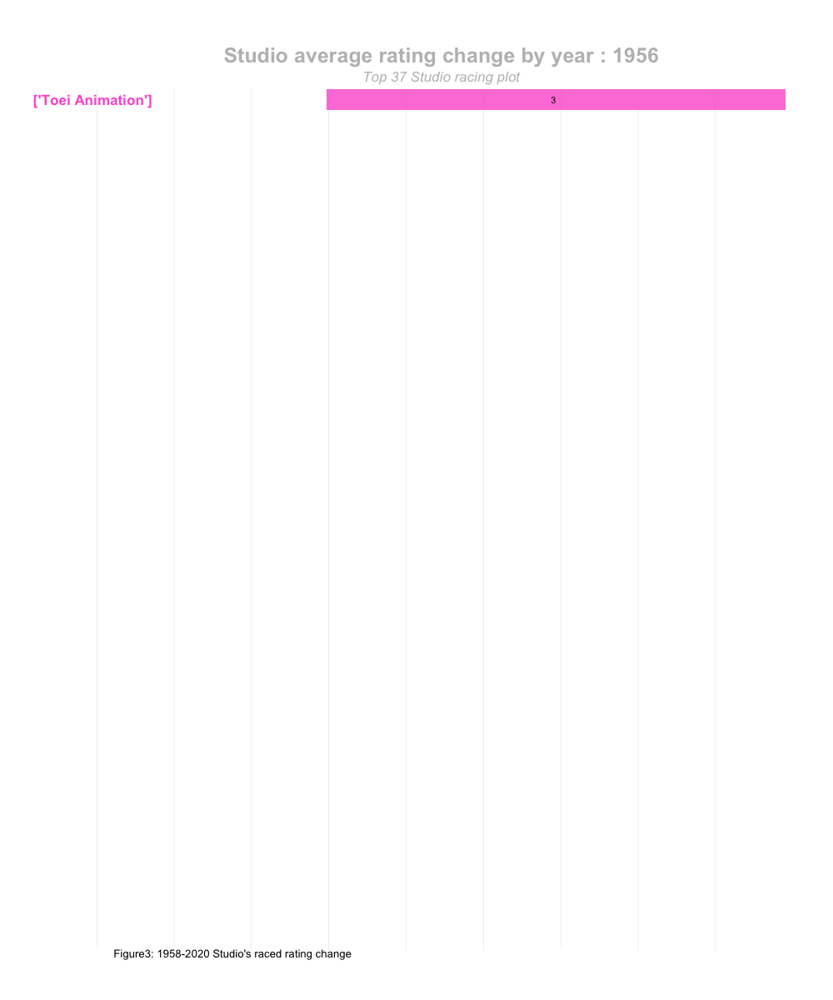
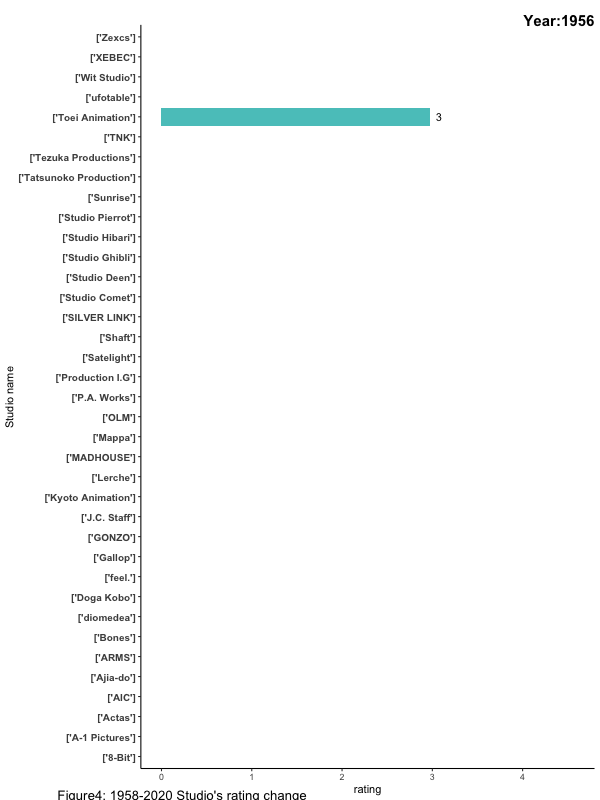

Part 3 Animated graph
##Data cleaning
summary(studiotop50$rating)
studiotop37r <- studiotop50 %>%
arrange(desc(rating)) %>%
#after looking at the code, find out how many is below the 2.75 lower quartile
slice (1:37)
selectstudio <- anime1 %>% select(title, startYr, studios, rating)
selectstudioall <- merge(studiotop37r, selectstudio,by = "studios", all = TRUE)
selectstudioclean <- na.omit(selectstudioall)
colnames(selectstudioclean) <- c("studios", "production","avg_rating","title","startyr","rating")
newavg <- selectstudioclean %>% select(studios, rating, production, avg_rating,startyr)
newavg1 <- aggregate(newavg[, 2:4], list(newavg$studios, newavg$startyr), mean)
colnames(newavg1) <- c("studios","startyr","rating", "production","avg_rating")3.1 Racing plot
summary(selectstudioclean)## studios production avg_rating title
## Length:4857 Min. : 42.0 Min. :2.756 Length:4857
## Class :character 1st Qu.: 99.0 1st Qu.:2.864 Class :character
## Mode :character Median :229.0 Median :3.196 Mode :character
## Mean :265.9 Mean :3.148
## 3rd Qu.:339.0 3rd Qu.:3.276
## Max. :683.0 Max. :3.661
## startyr rating
## Min. :1956 Min. :0.000
## 1st Qu.:1999 1st Qu.:2.732
## Median :2008 Median :3.322
## Mean :2005 Mean :3.166
## 3rd Qu.:2014 3rd Qu.:3.852
## Max. :2022 Max. :4.702library(gganimate)
library(av)
#create ranking list
newavg2 <- newavg1 %>% group_by(startyr)%>%
arrange(startyr, - rating)%>%
mutate(ranking = 1:n())
#Drop row that the year is above 2020.
newavg2 <-newavg2 [!(newavg2$startyr == "2021"|newavg2$startyr == "2022"),]
top1 <- ggplot(newavg2, aes(ranking, group = studios,
fill = as.factor(studios), color = as.factor(studios))) +
geom_tile(aes(y = rating,
height = rating,
width = 0.9), alpha = 0.8, color = NA) +
geom_text(aes(y = 0, label = paste(studios, " ")), vjust = 0.5, hjust = 0.5, size = 6, fontface="bold") +
geom_text(aes(y=rating,label = round(rating, digits = 1)), colour = "black", hjust=1) +
coord_flip(clip = "off", expand = FALSE) +
scale_y_continuous(labels = scales::comma) +
scale_x_reverse() +
guides(color = FALSE, fill = FALSE) +
theme(axis.line=element_blank(),
axis.text.x=element_blank(),
axis.text.y=element_blank(),
axis.ticks=element_blank(),
axis.title.x=element_blank(),
axis.title.y=element_blank(),
legend.position="none",
panel.background=element_blank(),
panel.border=element_blank(),
panel.grid.major=element_blank(),
panel.grid.minor=element_blank(),
panel.grid.major.x = element_line( size=.1, color="grey" ),
panel.grid.minor.x = element_line( size=.1, color="grey" ),
plot.title=element_text(size=25, hjust=0.5, face="bold", colour="grey", vjust=1),
plot.subtitle=element_text(size=17, hjust=0.5, face="italic", color="grey"),
plot.caption =element_text(size=8, hjust=0.5, face="italic", color="grey"),
plot.background=element_blank(),
plot.margin = margin(2,2, 2, 4, "cm"),
plot.tag.position = c (0.2, 0))
anim = top1 + transition_states(startyr, transition_length = 4, state_length = 1) +
view_follow(fixed_x = TRUE) +
labs(title = 'Studio average rating change by year : {closest_state}',
subtitle = "Top 37 Studio racing plot", tag = "Figure3: 1958-2020 Studio's raced rating change")
anime.gif <- animate(anim, nframes = 150, fps = 2.5, width = 1000, height = 1200)
anime.gif
3.2 Racing plot 2
topcompany <- ggplot(data=newavg2,aes (x = studios, y = rating, fill = rating))+
geom_bar(stat = 'identity',size = 6, fontface="bold")+
geom_text(aes(label=format(round(rating)), y=rating, hjust = -1),
position=position_dodge(1)) + coord_flip()+
scale_fill_gradient(low = 'grey39', high = 'cyan')+
scale_y_continuous("rating") + theme_classic()+
theme(legend.position='none', axis.text.y = element_text(size = 10, face = "bold"),
plot.subtitle = element_text(size = 15, hjust = 1, vjust = -2, face = "bold"),
plot.tag.position = c (0.3, 0))+
transition_states(states=startyr, transition_length=4, state_length = 1) +
ease_aes('cubic-in-out') + labs (subtitle = 'Year:{closest_state}',
tag = "Figure3: 1958-2020 Studio's rating change")+
labs(x='Studio name')
#nframes = 2 x length of the showing year (startyr) other wise only show 50
anime1.gif <- animate (topcompany, nframes = 150, fps = 2, width = 600, height = 800)
anime1.gif